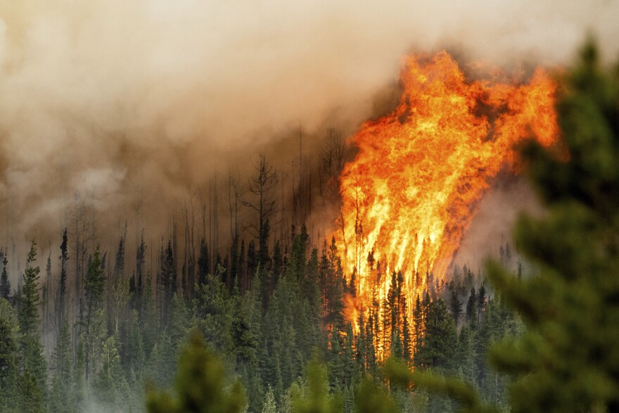

Why do some recent wildfires spread so fast? An analysis of three of the worst impacts on urban wildlife interface in recent years

Three memorable wildfires have recently
made headlines around the world for how fast
they spread, how intensely they burned and
the lives they claimed;
the Lahainas fire on Hawaii, Lytton, BC and West Kelowna, BC.
The CBC reported on September 11: "When wildfires move fast, the people in their path are left with little choice but to flee... And wildfires are moving more aggressively than ever, forcing entire communities from their homes and leaving destruction in their wake."
In June 2021, a fast-moving fire destroyed the majority of the village of Lytton, B.C., killing two elderly people who became trapped by the advancing flames.
Earlier this summer on the Hawaiian island of Maui, a deadly fire ripped through the historic town of Lahaina so quickly that people fled into the ocean to escape the flames. So far, 115 people have been confirmed dead and 66 more are still missing.
Last month, what began as a small fire in West Kelowna grew more than a hundredfold. Over a 24 hour period it grew from 64 hectares to 6,800 hectares (68 square kilometres). It became one of the fastest moving wildfires in B.C.‘s history. Over the course of the next few days, 170 structures were damaged or destroyed, and thousands were forced to evacuate.
“Compared to when I was a wildland firefighter, it seems like fires are different,” said Mathieu Bourbonnais, a former firefighter who is now an assistant professor of Earth, Environmental and Geographic Sciences at the University of British Columbia’s Okanagan campus.
These fires are faster and more aggressive, according to Bourbonnais. This makes them more dangerous to fight, and they are now more of a threat to the people who live close to affected areas.
By analyzing three factors: weather conditions, topography and fuel, those who fight and study fires say they can better understand and predict the conditions that lead to these fast-moving and destructive blazes and help prepare for a future where more fire is certain.